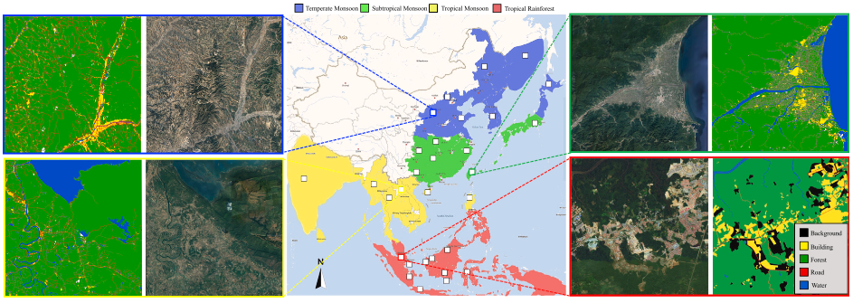
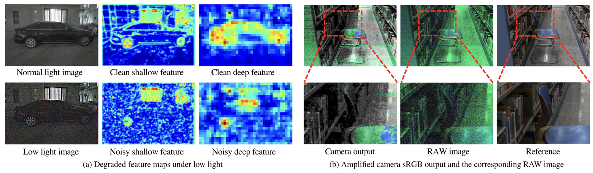

Selected Publications


A Large-scale Climate-aware Satellite Image Dataset for Domain Adaptive Land-Cover Semantic Segmentation
ISPRS Journal of Photogrammetry and Remote Sensing, 2023

Instance Segmentation in the Dark
International Journal of Computer Vision (IJCV), 2023